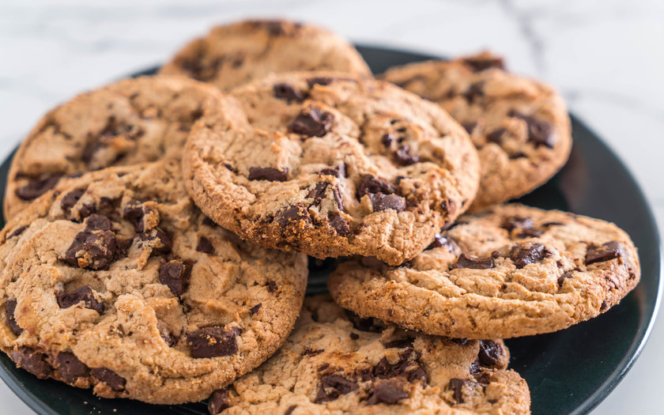

Mango graham cake is a popular dessert in the Philippines. Also called mango float, it's cold, sweet and so easy to make. Just layer graham crackers, sweetened cream, mangoes and enjoy.
Coffee Jelly
Coffee Jelly is a unique dessert that consists of coffee flavored gelatin that is served with cream. There are different variations of coffee jelly and different ways to serve it. Some like to have it with a scoop of vanilla ice cream and some like it with whipped cream.
Graham Balls
Graham Balls are no-bake dessert bites made of graham cracker crumbs, condensed milk, and all-purpose cream. They're super easy to make and so luscious and delicious. The perfect treat to satisfy your sweet cravings.
Fruit Cocktail Salad
Fruit cocktail is a mixture of canned diced fruit in juice or syrup. It traditionally includes pears, peaches, grapes, and a maraschino cherry. The tropical version contains pineapple and papaya.
Cake Pops
A cake pop is a form of cake styled as a lollipop. Cake crumbs are mixed with icing or chocolate, and formed into small spheres or cubes in the same way as cake balls, before being given a coating of icing, chocolate or other decorations and attached to lollipop sticks.

Chocolate Chip Cookies
Chocolate chips or chocolate morsels are small chunks of sweetened chocolate, used as an ingredient in a number of desserts (notably chocolate chip cookies and muffins), in trail mix and less commonly in some breakfast foods such as pancakes.
Shortbread Cookies
These cookies can look similar but sugar cookies usually have eggs and leavening agents making them lighter and sweeter. Shortbread tends to be a bit denser, and less sweet, with a more buttery flavor.
Buko Pandan
Buko Pandan is a popular Filipino Dessert made using young coconut, pandan leaves (or Screwpine leaves), and sago pearls. At first glance, this dessert dish can be mistaken for Buko Salad. Both desserts are almost similar visually.
Leche Flan
Leche Flan is always a must and a crowd pleaser in any Filipino celebration or fiesta but most especially during Christmas. Our take on this classic dessert is tangy, sweet, smooth and creamy everyone will enjoy!